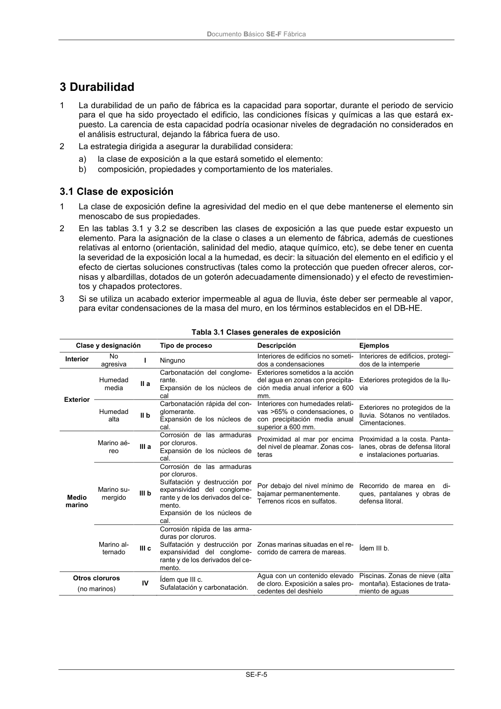

DB-SE-F Fábrica · edición 2019-12-20 · capa oficial
Documento DB-SE-F-oficial · SHA-256 del PDF e3e0805c3b4c307519c26dc34c3fdbf143d842edd013c91b0f52d2c73403d91c
Copia fiel del PDF fuente · Fuente oficial
Ficha de la disposición en la fuente oficial
Formatos: JSON del segmento · Markdown
2.4 Aptitud al servicio 1 Para evitar la fisuración y asegurar la durabilidad del acero pretensado, se comprobará que, para las combinaciones de acciones del tipo casi permanente no se producen tracciones ni rotura a compresión de la fábrica. Se considerará que ya se ha transferido el pretensado, una vez producidas las pérdidas de tensión. 2 El coeficiente parcial de seguridad para acciones de pretensado, después de las perdidas, será igual a 0,90 si la armadura es postesa y el efecto de la acción es favorable, igual a 0,95 si la armadura es pretesa y el efecto de la acción es favorable, será igual a 1,10 si la armadura es postesa y el efecto de la acción es desfavorable e igual a 1,05 si la armadura es pretesa y el efecto de la acción es desfavo- rable. 3 Tras las pérdidas, se considerará que el esfuerzo de pretensado es constante. Documento Básico SE-F Fábrica SE-F-5
